<!DOCTYPE lake>
<p data-lake-id="udf3aa216" id="udf3aa216"><span data-lake-id="u96537f9a" id="u96537f9a">xiu 学习目标</span></p><ul list="ua5ae48e6"><li data-lake-id="u8f1dd8a1" fid="u0989102c" id="u8f1dd8a1"><span data-lake-id="u91f28a77" id="u91f28a77">掌握Docker安装和配置</span></li><li data-lake-id="ue4619dd0" fid="u0989102c" id="ue4619dd0"><span data-lake-id="ub2c3e47f" id="ub2c3e47f">理解Docker的Image概念</span></li><li data-lake-id="ua3d2ae7f" fid="u0989102c" id="ua3d2ae7f"><span data-lake-id="u72efd5b5" id="u72efd5b5">理解Docker的Container概念</span></li><li data-lake-id="u1aa5f552" fid="u0989102c" id="u1aa5f552"><span data-lake-id="u3e4719bf" id="u3e4719bf">掌握Image的基本命令和GUI操作</span></li><li data-lake-id="u0727f66a" fid="u0989102c" id="u0727f66a"><span data-lake-id="u6ae780d4" id="u6ae780d4">掌握Container的基本命令和GUI操作</span></li></ul><h2 data-lake-id="ZXFB4" id="ZXFB4"><span data-lake-id="u890ef31c" id="u890ef31c">学习内容</span></h2><h3 data-lake-id="A2DH2" id="A2DH2"><span data-lake-id="uaaa90e99" id="uaaa90e99">Docker安装</span></h3><p data-lake-id="u3aa2c89f" id="u3aa2c89f"><a data-lake-id="u0a5819e6" href="https://www.docker.com/" id="u0a5819e6" rel="noopener noreferrer" target="_blank"><span data-lake-id="udd095886" id="udd095886">https://www.docker.com/</span></a></p><p data-lake-id="ufe74543e" id="ufe74543e"><a data-lake-id="ua8dea697" href="https://docs.docker.com/desktop/install/windows-install/" id="ua8dea697" rel="noopener noreferrer" target="_blank"><span data-lake-id="ue113fdeb" id="ue113fdeb">https://docs.docker.com/desktop/install/windows-install/</span></a></p><ol list="u51e5ff7f"><li data-lake-id="ucffc720f" fid="ud30cb31f" id="ucffc720f"><span data-lake-id="ud3cad935" id="ud3cad935">安装</span><code data-lake-id="u5f25a694" id="u5f25a694"><span data-lake-id="uff910c65" id="uff910c65">Docker Desktop Installer.exe</span></code></li><li data-lake-id="u2e4d1fb9" fid="ud30cb31f" id="u2e4d1fb9"><span data-lake-id="ue1d34290" id="ue1d34290">安装 wsl_update_x64.exe，此安装包为WSL2</span></li><li data-lake-id="u94523158" fid="ud30cb31f" id="u94523158"><span data-lake-id="u291520ac" id="u291520ac">将WSL 2设置为默认版本。</span><strong><span data-lake-id="u54603c2a" id="u54603c2a">使用管理权限打开PowerShell</span></strong></li></ol><span class="yuque-card-unsupported">[codeblock]</span><h3 data-lake-id="BIDQW" id="BIDQW"><span data-lake-id="uf8779594" id="uf8779594">修改Docker存储路径</span></h3><p data-lake-id="u6b06377d" id="u6b06377d"><strong><span data-lake-id="ud7897c0e" id="ud7897c0e" style="color: #DF2A3F">针对C盘比较贫穷的适用</span></strong></p><ol list="u6eff62ba"><li data-lake-id="ud5f6556a" fid="uf3a63747" id="ud5f6556a"><span data-lake-id="u78e234c7" id="u78e234c7">删除所有的容器和镜像</span></li><li data-lake-id="ub7137f30" fid="uf3a63747" id="ub7137f30"><span data-lake-id="u479ccee5" id="u479ccee5">clear 数据</span></li></ol><p data-lake-id="u3ace5a34" id="u3ace5a34" style="padding-left: 2em">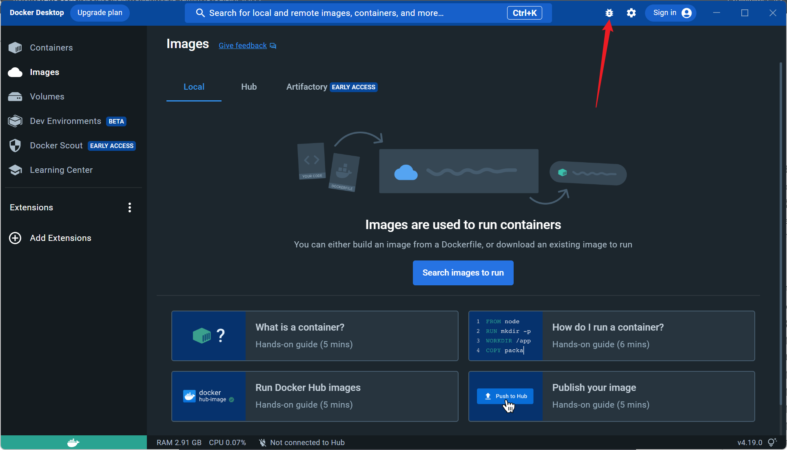</p><p data-lake-id="u6593895a" id="u6593895a" style="padding-left: 2em">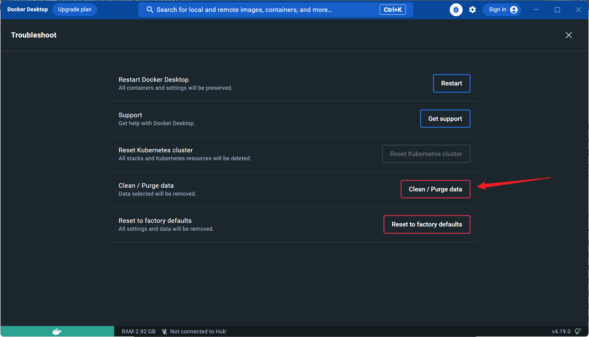</p><p data-lake-id="u345a30c6" id="u345a30c6" style="padding-left: 2em">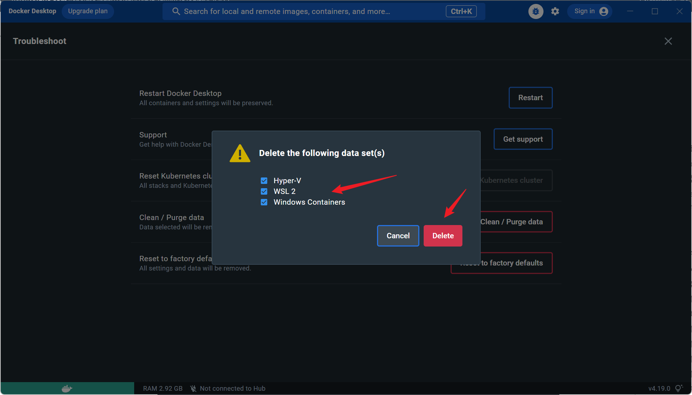</p><ol list="u6eff62ba" start="3"><li data-lake-id="u5ae49871" fid="uf3a63747" id="u5ae49871"><span data-lake-id="u105814bc" id="u105814bc">关闭Docker Desktop</span></li></ol><p data-lake-id="ucdf7d11e" id="ucdf7d11e" style="padding-left: 2em">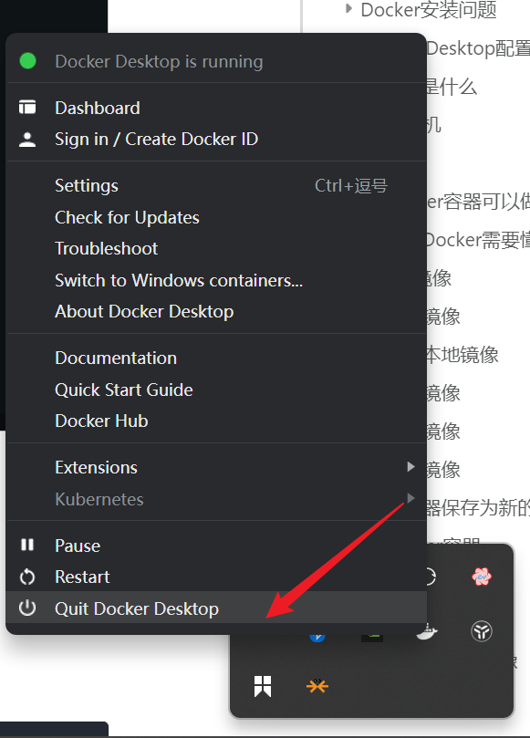</p><ol list="u6eff62ba" start="4"><li data-lake-id="ud3644468" fid="uf3a63747" id="ud3644468"><span data-lake-id="uf404d8bb" id="uf404d8bb">确定需要安装的路径。例如我的路径是：</span><code data-lake-id="u5808997e" id="u5808997e"><span data-lake-id="ub13b0ac7" id="ub13b0ac7">D:\softwares\Docker</span></code></li><li data-lake-id="ue8c1c50f" fid="uf3a63747" id="ue8c1c50f"><span data-lake-id="u72e16efc" id="u72e16efc">在安装目录下，新建两个文件夹</span><code data-lake-id="uba394bcd" id="uba394bcd"><span data-lake-id="ud6d250bc" id="ud6d250bc">docker-desktop</span></code><span data-lake-id="ucf463294" id="ucf463294">,</span><code data-lake-id="uab593e27" id="uab593e27"><span data-lake-id="u234f96d3" id="u234f96d3">docker-desktop-data</span></code></li><li data-lake-id="u83f5fa19" fid="uf3a63747" id="u83f5fa19"><span data-lake-id="ue6e676dc" id="ue6e676dc">导出数据。来到安装目录，打开命令行</span></li></ol><span class="yuque-card-unsupported">[codeblock]</span><span class="yuque-card-unsupported">[codeblock]</span><ol list="u6c8396bf" start="7"><li data-lake-id="uef0a0066" fid="ue4b8a822" id="uef0a0066"><span data-lake-id="u701ea280" id="u701ea280">注销docker服务</span></li></ol><span class="yuque-card-unsupported">[codeblock]</span><span class="yuque-card-unsupported">[codeblock]</span><ol list="u2e5b0edd" start="8"><li data-lake-id="u635bc4c3" fid="u5c9f525f" id="u635bc4c3"><span data-lake-id="u0d2ef9a6" id="u0d2ef9a6">导入数据</span></li></ol><span class="yuque-card-unsupported">[codeblock]</span><span class="yuque-card-unsupported">[codeblock]</span><ul list="u5a5eb275"><li data-lake-id="ud2d64a79" fid="u270f832a" id="ud2d64a79"><code data-lake-id="u315767ed" id="u315767ed"><span data-lake-id="u67e1d59c" id="u67e1d59c">xxx</span></code><span data-lake-id="ue9767f65" id="ue9767f65">表示安装路径，我的是</span><code data-lake-id="u323ea305" id="u323ea305"><span data-lake-id="ucb2c437c" id="ucb2c437c">d:\softwares\Docker</span></code></li></ul><ol list="u15727cf4" start="9"><li data-lake-id="ue28dba61" fid="ucbef4393" id="ue28dba61"><span data-lake-id="u17fd43e2" id="u17fd43e2">打开Docker Desktop</span></li></ol><span class="yuque-card-unsupported">[codeblock]</span><h3 data-lake-id="OfzgC" id="OfzgC"><span data-lake-id="ub3589cda" id="ub3589cda">Docker安装问题</span></h3><h4 data-lake-id="kbMfm" id="kbMfm"><span data-lake-id="ua08fad52" id="ua08fad52">问题一</span></h4><p data-lake-id="u93bd0d51" id="u93bd0d51">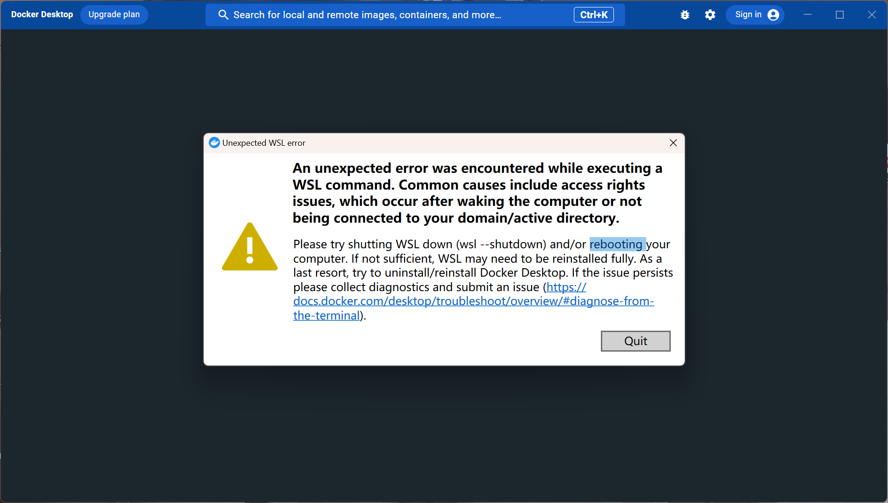</p><h5 data-lake-id="olNqS" id="olNqS"><span data-lake-id="ucf9caafe" id="ucf9caafe">解决</span></h5><span class="yuque-card-unsupported">[codeblock]</span><p data-lake-id="u60afe359" id="u60afe359"><span data-lake-id="uf62c13f1" id="uf62c13f1">重启电脑</span></p><h5 data-lake-id="L1RL0" id="L1RL0"><span data-lake-id="u054a7a1f" id="u054a7a1f">废弃</span></h5><ol list="u42b1d0e6"><li data-lake-id="udc60e5cd" fid="u232513aa" id="udc60e5cd"><span data-lake-id="u7e8826ea" id="u7e8826ea">安装wsl完整版本</span></li></ol><span class="yuque-card-unsupported">[codeblock]</span><ol list="uf9612421" start="2"><li data-lake-id="u4b4cb9b2" fid="u2b9edf37" id="u4b4cb9b2"><span data-lake-id="u1e815c9f" id="u1e815c9f">启用wsl</span></li></ol><span class="yuque-card-unsupported">[codeblock]</span><ol list="uf4bfafb9" start="3"><li data-lake-id="u2b7b648a" fid="u200e68c8" id="u2b7b648a"><span data-lake-id="u1ac4d11b" id="u1ac4d11b">重启电脑，重新打开docker desktop</span></li><li data-lake-id="u55a60722" fid="u200e68c8" id="u55a60722"><span data-lake-id="udae31f62" id="udae31f62">管理员权限打开powershell</span></li></ol><span class="yuque-card-unsupported">[codeblock]</span><ol list="uf4bfafb9" start="5"><li data-lake-id="ua921d1e9" fid="u200e68c8" id="ua921d1e9"><span data-lake-id="uca11d4c8" id="uca11d4c8">重置winsock</span></li></ol><span class="yuque-card-unsupported">[codeblock]</span><ol list="uf4bfafb9" start="6"><li data-lake-id="uf405497b" fid="u200e68c8" id="uf405497b"><span data-lake-id="u87849cb5" id="u87849cb5">重启电脑，重新打开docker desktop</span></li></ol><h4 data-lake-id="zpfY0" id="zpfY0"><span data-lake-id="uc095d5d9" id="uc095d5d9">问题二</span></h4><p data-lake-id="ub2ca17ef" id="ub2ca17ef">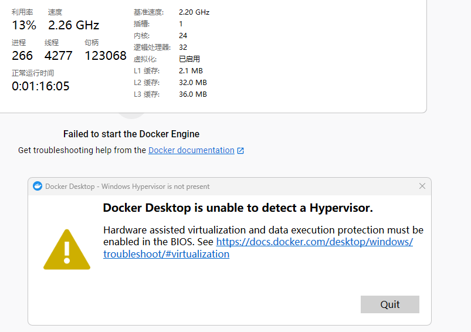</p><h4 data-lake-id="ClWjY" id="ClWjY"><span data-lake-id="u50b13079" id="u50b13079">问题三</span></h4><p data-lake-id="u9a4855b3" id="u9a4855b3"><br/></p><h3 data-lake-id="ikzaw" id="ikzaw"><span data-lake-id="u0d634939" id="u0d634939">Docker Desktop配置</span></h3><ol list="ua394dfd9"><li data-lake-id="u185d0d31" fid="u882d3958" id="u185d0d31"><span data-lake-id="u9f8e3739" id="u9f8e3739">打开Docker Desktop中的设置界面，来到Docker Engine目录</span></li></ol><p data-lake-id="uc1dd0403" id="uc1dd0403" style="padding-left: 2em">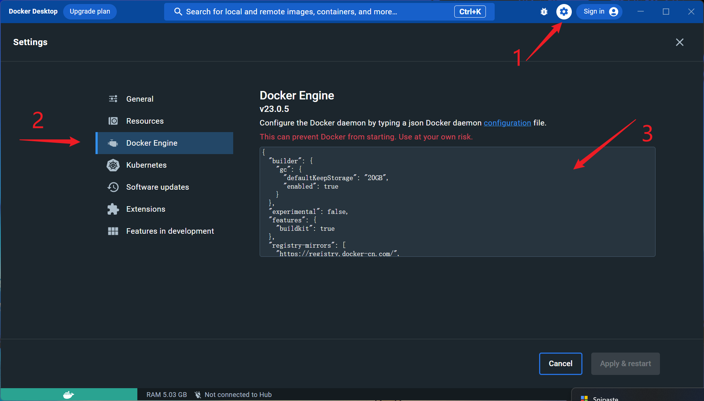</p><ol list="u1ec10cd4" start="2"><li data-lake-id="uc41e4312" fid="u99256d06" id="uc41e4312"><span data-lake-id="u7eb07982" id="u7eb07982">在编辑框中追加以下内容：</span></li></ol><span class="yuque-card-unsupported">[codeblock]</span><ul data-lake-indent="1" list="u489cfe84"><li data-lake-id="u251cd54e" fid="u55103cdc" id="u251cd54e"><span data-lake-id="u386569b2" id="u386569b2">追加的内容是为了配置Docker仓库地址。Docker仓库默认地址为国外网站，经常连不上，而且网速慢。配置完成后为国内镜像地址，网速快，不断网。</span></li></ul><span class="yuque-card-unsupported">[codeblock]</span><ol list="u90a2bd0b" start="3"><li data-lake-id="u97833c3b" fid="ud3eeb7a8" id="u97833c3b"><span data-lake-id="uc4ecf3f1" id="uc4ecf3f1">修改完成后，点击右下角的 </span><code data-lake-id="u5a602f9a" id="u5a602f9a"><span data-lake-id="u20c4ef0e" id="u20c4ef0e">Apply &amp; restart</span></code><span data-lake-id="u86de8c15" id="u86de8c15">,等待配置完成重启。</span></li></ol><h3 data-lake-id="aAXsb" id="aAXsb"><span data-lake-id="ub5a0df74" id="ub5a0df74">Docker是什么</span></h3><p data-lake-id="ue68b85e5" id="ue68b85e5"><span data-lake-id="uf4486680" id="uf4486680">Docker是一个开源容器化平台，简单理解就是一个</span><strong><span data-lake-id="u0a2f0bce" id="u0a2f0bce">轻量级的虚拟机</span></strong><span data-lake-id="u3e69ae5a" id="u3e69ae5a">。</span></p><h4 data-lake-id="q2U1H" id="q2U1H"><span data-lake-id="ubbd606d5" id="ubbd606d5">虚拟机</span></h4><p data-lake-id="ucae06f51" id="ucae06f51"><span data-lake-id="ufc14ecac" id="ufc14ecac">对于虚拟机而言，大家可能不陌生。虚拟机的特点是环境独立，运行一些操作系统（Ubuntu，windows等）。虚拟机是一个软件程序，不同的平台有不同的虚拟机，常见的虚拟机软件有，vmware、vbox、parallels等。</span></p><p data-lake-id="u552095af" id="u552095af"><span data-lake-id="uf5e06274" id="uf5e06274">虚拟机的特点:</span></p><ul list="uc5b8616a"><li data-lake-id="ub780435f" fid="ucb9e172d" id="ub780435f"><span data-lake-id="uae2baa54" id="uae2baa54">启动慢</span></li><li data-lake-id="uf553c120" fid="ucb9e172d" id="uf553c120"><span data-lake-id="uddbcd63f" id="uddbcd63f">独立环境</span></li><li data-lake-id="u19ecbf1f" fid="ucb9e172d" id="u19ecbf1f"><span data-lake-id="u3ecfc276" id="u3ecfc276">可以安装很多程序</span></li></ul><h4 data-lake-id="nUvMi" id="nUvMi"><span data-lake-id="u9a007a44" id="u9a007a44">容器</span></h4><p data-lake-id="uc509887b" id="uc509887b"><span data-lake-id="uadfc0b5a" id="uadfc0b5a">容器是</span><strong><span data-lake-id="u03d4c4c8" id="u03d4c4c8">轻量级的虚拟机</span></strong><span data-lake-id="u3e76cba2" id="u3e76cba2">。</span></p><ul list="u624b9b07"><li data-lake-id="u934e2730" fid="u0a84421c" id="u934e2730"><span data-lake-id="ue1f68f8a" id="ue1f68f8a">启动快</span></li><li data-lake-id="ud0cfd2bc" fid="u0a84421c" id="ud0cfd2bc"><span data-lake-id="u40716e08" id="u40716e08">独立环境</span></li><li data-lake-id="u60193040" fid="u0a84421c" id="u60193040"><span data-lake-id="u13bdf14b" id="u13bdf14b">可以安装很多程序</span></li></ul><p data-lake-id="uc5b54152" id="uc5b54152"><span data-lake-id="ue398a392" id="ue398a392">对于容器而言，感觉虚拟机能做的容器都可以做，但是，并不是虚拟机不行，而是业务场景不同，虚拟机更像一个真实的电脑，安全性更高。</span></p><h4 data-lake-id="SExYQ" id="SExYQ"><span data-lake-id="u8ad0869d" id="u8ad0869d">Docker容器可以做的事情</span></h4><p data-lake-id="u13af5239" id="u13af5239"><span data-lake-id="u65b6ba4c" id="u65b6ba4c">Docker 是一个开源的容器化平台，它能够帮助开发人员和运维团队更高效地构建、部署和运行应用程序。以下是 Docker 可以做的一些事情：</span></p><ol list="ubf1b92dc"><li data-lake-id="uc99ecd8e" fid="u970c6869" id="uc99ecd8e"><span data-lake-id="u2f29887c" id="u2f29887c">应用程序打包和交付： Docker 可以将应用程序及其所有依赖项打包成一个独立的容器，包括操作系统、运行时环境、库和配置等。这使得应用程序可以在任何环境中一致地运行，避免了因环境差异而导致的问题。</span></li><li data-lake-id="udf3e0156" fid="u970c6869" id="udf3e0156"><span data-lake-id="ubc8b9717" id="ubc8b9717">快速部署和扩展： Docker 可以快速部署应用程序容器，无论是在开发、测试还是生产环境中。通过 Docker 镜像，你可以在几秒钟内启动和停止容器，并根据需求进行水平扩展，轻松应对流量增加的情况。</span></li><li data-lake-id="ua10727f9" fid="u970c6869" id="ua10727f9"><span data-lake-id="u53aa572c" id="u53aa572c">环境隔离和一致性： Docker 容器提供了高度隔离的运行环境，确保应用程序之间互不干扰。每个容器都有自己的文件系统、进程空间和网络接口。这使得应用程序可以在相同的容器环境中以一致的方式运行，减少了因环境差异导致的问题。</span></li><li data-lake-id="u7e9986a7" fid="u970c6869" id="u7e9986a7"><span data-lake-id="u6f62b456" id="u6f62b456">资源利用和效率： Docker 允许在宿主机上运行多个容器，它们共享宿主机的操作系统内核和硬件资源。这种轻量级的虚拟化方式使得资源利用更加高效，节省了硬件和运维成本。</span></li><li data-lake-id="u60e6e5d5" fid="u970c6869" id="u60e6e5d5"><span data-lake-id="u5b879616" id="u5b879616">持续集成和持续部署： Docker 可以与持续集成和持续部署工具集成，实现自动化的构建、测试和部署流程。通过 Docker 镜像，你可以确保应用程序在不同环境中具有相同的配置和行为，减少了部署过程中的问题。</span></li></ol><p data-lake-id="ue55666de" id="ue55666de"><span data-lake-id="u7a89ee1a" id="u7a89ee1a">总之，Docker 提供了一种简单而强大的容器化解决方案，使得应用程序的构建、部署和运行变得更加可靠、高效和便捷。它在软件开发、测试和部署等方面发挥着重要的作用。</span></p><h4 data-lake-id="qdQeG" id="qdQeG"><span data-lake-id="u1e22f8eb" id="u1e22f8eb">学习Docker需要懂的关键词</span></h4><p data-lake-id="u1ef7d125" id="u1ef7d125"><span data-lake-id="ub7d0b617" id="ub7d0b617">我们通过一些生活化的事务来去理解Docker的一些关键词，大致就可以知道docker的作用。</span></p><p data-lake-id="ub5b53582" id="ub5b53582"><span data-lake-id="u34ab6dc2" id="u34ab6dc2">Docker是运行在电脑中的软件，我们将电脑比喻成一个大型商城，Docker的概念理解可以进一步扩展如下：</span></p><ol list="u7dee7f18"><li data-lake-id="uabb0aa19" fid="u0743bb77" id="uabb0aa19"><span data-lake-id="u46f33d11" id="u46f33d11">主机（Host Machine）：主机就像是整个商城所在的建筑物。它是物理设备，可以是个人电脑、服务器或云平台。宿主机上安装了Docker引擎，负责管理和运行Docker容器。</span></li><li data-lake-id="u9ac94fa0" fid="u0743bb77" id="u9ac94fa0"><span data-lake-id="u5cb1bc83" id="u5cb1bc83">Docker引擎（Docker Engine）：Docker引擎类似于商城的管理团队，它负责整个商城的运行和管理。Docker引擎包括Docker守护进程（Docker Daemon）和Docker客户端（Docker Client）。守护进程在宿主机上运行，并响应来自客户端的指令，管理容器和镜像的生命周期。</span></li><li data-lake-id="u00f538c4" fid="u0743bb77" id="u00f538c4"><strong><span data-lake-id="uee672f67" id="uee672f67">Docker容器（Container）</span></strong><span data-lake-id="ua5c94383" id="ua5c94383">：容器可以比作商城中的店铺，每个容器都是一个独立的、隔离的运行环境，类似于店铺的经营空间。容器中包含了应用程序及其所有依赖的文件系统、库和配置。容器可以独立运行，相互之间互不干扰。</span></li><li data-lake-id="u82d3b2b5" fid="u0743bb77" id="u82d3b2b5"><strong><span data-lake-id="u95056cf0" id="u95056cf0">Docker镜像（Image）</span></strong><span data-lake-id="u24969352" id="u24969352">：镜像类似于商城店铺的模型或蓝图，描述了如何构建容器的内容和配置。镜像是只读的，可以看作是容器的模板。你可以通过Dockerfile来创建镜像，定义容器的构建过程。</span></li><li data-lake-id="u58e73aa8" fid="u0743bb77" id="u58e73aa8"><strong><span data-lake-id="u60147841" id="u60147841">Docker仓库（Registry）</span></strong><span data-lake-id="u6d098188" id="u6d098188">：仓库可以看作是商城的存储库，存放着各种不同店铺的模型和商品。Docker仓库用于存储和分享镜像。公共的Docker仓库如Docker Hub允许你获取和分享镜像，私有的仓库则可以用于组织内部的镜像存储和共享。</span></li><li data-lake-id="uaab2cd5b" fid="u0743bb77" id="uaab2cd5b"><strong><span data-lake-id="u4ba0e957" id="u4ba0e957">Dockerfile</span></strong><span data-lake-id="u48f6a90c" id="u48f6a90c">：Dockerfile就像是商城店铺的创建图纸，指导制造商如何制作店铺。Dockerfile是一个文本文件，包含了一系列的指令和配置，用于构建和配置镜像。通过执行Dockerfile中的指令，可以自动化地构建镜像。</span></li></ol><p data-lake-id="u11be916b" id="u11be916b">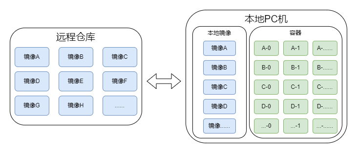</p><p data-lake-id="ua1adfd10" id="ua1adfd10">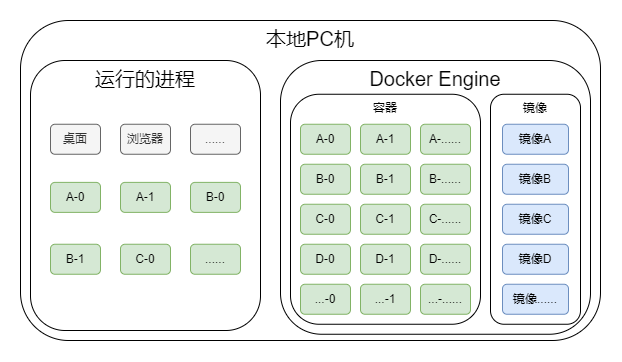</p><h3 data-lake-id="CC5wL" id="CC5wL"><span data-lake-id="u4cbe6ed8" id="u4cbe6ed8">Image镜像</span></h3><h4 data-lake-id="SS0la" id="SS0la"><span data-lake-id="ud912f1dc" id="ud912f1dc">获取镜像</span></h4><span class="yuque-card-unsupported">[codeblock]</span><ul list="ue591ad5f"><li data-lake-id="u5236ef86" fid="u07a6f0ff" id="u5236ef86"><span data-lake-id="u586bcf55" id="u586bcf55">&lt;remote_image&gt; 为远程仓库中需要的镜像名称</span></li></ul><h4 data-lake-id="wFY8n" id="wFY8n"><span data-lake-id="u178bae6b" id="u178bae6b">查询本地镜像</span></h4><span class="yuque-card-unsupported">[codeblock]</span><h4 data-lake-id="qsQB1" id="qsQB1"><span data-lake-id="uc54d011c" id="uc54d011c">运行镜像</span></h4><span class="yuque-card-unsupported">[codeblock]</span><ul list="uc596ea1f"><li data-lake-id="u79bd6ca0" fid="ub3ecfe48" id="u79bd6ca0"><span data-lake-id="u38cdee42" id="u38cdee42">&lt;local_image&gt; 本地镜像名称</span></li><li data-lake-id="uf8bde8a3" fid="ub3ecfe48" id="uf8bde8a3"><span data-lake-id="u54973574" id="u54973574">运行以上命令时，会创建一个容器，容器会运行起来</span></li><li data-lake-id="u32d369a8" fid="ub3ecfe48" id="u32d369a8"><span data-lake-id="uc9e8fe7c" id="uc9e8fe7c">如果需要以交互形式启动，则需要加上</span><code data-lake-id="udbe8e560" id="udbe8e560"><span data-lake-id="u5df940bb" id="u5df940bb">-it</span></code><span data-lake-id="u72c2393d" id="u72c2393d">操作，</span><code data-lake-id="uf9dd75f6" id="uf9dd75f6"><span data-lake-id="uf939b411" id="uf939b411">docker run -it &lt;local_image&gt;</span></code></li></ul><h4 data-lake-id="mAJ2z" id="mAJ2z"><span data-lake-id="u78c8e215" id="u78c8e215">导出镜像</span></h4><span class="yuque-card-unsupported">[codeblock]</span><ul list="uc6f3dc8b"><li data-lake-id="u3d011300" fid="u14acd36a" id="u3d011300"><span data-lake-id="u8ff1e7f6" id="u8ff1e7f6">&lt;output_file.tar&gt;: 导出后的压缩包名称</span></li><li data-lake-id="u48e29745" fid="u14acd36a" id="u48e29745"><span data-lake-id="u476d45c4" id="u476d45c4">&lt;image_name&gt;: 需要导出的镜像名称</span></li></ul><h4 data-lake-id="RD5hq" id="RD5hq"><span data-lake-id="ua26711bc" id="ua26711bc">导入镜像</span></h4><span class="yuque-card-unsupported">[codeblock]</span><ul list="ue5b8e050"><li data-lake-id="u5d550cfe" fid="ua5654188" id="u5d550cfe"><span data-lake-id="ud224245c" id="ud224245c">&lt;input_file.tar&gt;: 需要导入的镜像压缩包</span></li></ul><h4 data-lake-id="L634T" id="L634T"><span data-lake-id="uf399db92" id="uf399db92">将容器保存为新的镜像</span></h4><span class="yuque-card-unsupported">[codeblock]</span><ul list="u908512a6"><li data-lake-id="u130dc906" fid="ufa36e583" id="u130dc906"><span data-lake-id="u700fec8b" id="u700fec8b">&lt;container_id&gt;: 容器的id和容器的名称</span></li><li data-lake-id="uef4e42d3" fid="ufa36e583" id="uef4e42d3"><span data-lake-id="u6cc12c51" id="u6cc12c51">&lt;image_name&gt;: 新的镜像名称</span></li><li data-lake-id="u089c76cc" fid="ufa36e583" id="u089c76cc"><span data-lake-id="u6f68ccf5" id="u6f68ccf5">&lt;tag&gt;: 新的镜像的标签</span></li></ul><h3 data-lake-id="sas4O" id="sas4O"><span data-lake-id="u07a9cb53" id="u07a9cb53">Container容器</span></h3><h4 data-lake-id="afXDA" id="afXDA"><span data-lake-id="u8c40f236" id="u8c40f236">查看容器</span></h4><span class="yuque-card-unsupported">[codeblock]</span><ul list="uc1efdcb2"><li data-lake-id="uad5741b8" fid="u66dcbd8b" id="uad5741b8"><span data-lake-id="uda30710c" id="uda30710c">查询运行的容器</span></li><li data-lake-id="u36c6c64c" fid="u66dcbd8b" id="u36c6c64c"><span data-lake-id="u08341ffa" id="u08341ffa">如果要查询所有容器，加上</span><code data-lake-id="u88a766f1" id="u88a766f1"><span data-lake-id="ub8cf15bf" id="ub8cf15bf">-a</span></code><span data-lake-id="ufeeef076" id="ufeeef076">参数</span></li></ul><h4 data-lake-id="sq0Jo" id="sq0Jo"><span data-lake-id="ubaea3292" id="ubaea3292">运行容器</span></h4><span class="yuque-card-unsupported">[codeblock]</span><ul list="ub8b32e2a"><li data-lake-id="u46b9c083" fid="ud0f36f1f" id="u46b9c083"><span data-lake-id="u71795f2c" id="u71795f2c">&lt;container_name&gt;，要运行的容器id或者名称</span></li></ul><p data-lake-id="u3de34bb0" id="u3de34bb0"><span data-lake-id="u92ec2a92" id="u92ec2a92">如果需要带交互的启动，则运行一下命令</span></p><span class="yuque-card-unsupported">[codeblock]</span><h4 data-lake-id="l3h0b" id="l3h0b"><span data-lake-id="ufe09a6e0" id="ufe09a6e0">将容器导出镜像</span></h4><span class="yuque-card-unsupported">[codeblock]</span><h3 data-lake-id="PdnQc" id="PdnQc"><span data-lake-id="u7326fa89" id="u7326fa89">Dockerfile</span></h3><h4 data-lake-id="Pb2V5" id="Pb2V5"><span data-lake-id="u4ef26030" id="u4ef26030">编写规则</span></h4><h5 data-lake-id="zFi3c" id="zFi3c"><span data-lake-id="u42919e93" id="u42919e93">FROM</span></h5><p data-lake-id="u5d6543d9" id="u5d6543d9"><code data-lake-id="ue5380ebe" id="ue5380ebe"><span data-lake-id="ue1e217cb" id="ue1e217cb">from</span></code><span data-lake-id="u752fdafa" id="u752fdafa">表示我要构建新的镜像以哪一个镜像为基础。例如：</span></p><span class="yuque-card-unsupported">[codeblock]</span><ul list="u0234b3fb"><li data-lake-id="ue1232fca" fid="ufdbdfda5" id="ue1232fca"><span data-lake-id="ub425b16c" id="ub425b16c">ENV 是环境变量标记</span></li></ul><p data-lake-id="ud66cff5b" id="ud66cff5b"><span data-lake-id="ud7a5283c" id="ud7a5283c">通常我们在构建时会加上</span><code data-lake-id="u97dba30d" id="u97dba30d"><span data-lake-id="ua358cfa0" id="ua358cfa0">DEBIAN_FRONTEND noninteractive</span></code></p><p data-lake-id="ud1783d39" id="ud1783d39"><code data-lake-id="u185c5e42" id="u185c5e42"><span data-lake-id="ue561b7ad" id="ue561b7ad">DEBIAN_FRONTEND</span></code><span data-lake-id="u48839bea" id="u48839bea"> 是一个环境变量，用于控制Debian系列操作系统（如Ubuntu）中的包管理器（如apt）的前端界面。</span></p><p data-lake-id="uec2940fd" id="uec2940fd"><span data-lake-id="u018c2e3a" id="u018c2e3a">将 DEBIAN_FRONTEND 设置为 noninteractive 时，它告诉apt等工具在执行软件包操作（例如安装、升级、配置）时，使用默认选项而无需用户输入或交互。</span></p><p data-lake-id="u02288efb" id="u02288efb"><span data-lake-id="u9d12af41" id="u9d12af41">通过将 DEBIAN_FRONTEND 设置为 noninteractive，可以在自动化构建过程中避免出现需要用户输入的提示，从而使构建过程更加自动化和无人参与。</span></p><h5 data-lake-id="WWWZQ" id="WWWZQ"><span data-lake-id="u001ba587" id="u001ba587">RUN</span></h5><p data-lake-id="u0c31f55d" id="u0c31f55d"><code data-lake-id="ub8b8f03d" id="ub8b8f03d"><span data-lake-id="u07d05cd6" id="u07d05cd6">run</span></code><span data-lake-id="u3da1786a" id="u3da1786a">表示运行命令的，例如：</span></p><span class="yuque-card-unsupported">[codeblock]</span><p data-lake-id="u6f693f28" id="u6f693f28"><span data-lake-id="u3b34dd0b" id="u3b34dd0b">run后面跟的就是一段需要执行的命令，构建镜像时会顺序执行</span></p><h5 data-lake-id="wzUTP" id="wzUTP"><span data-lake-id="uce6a779a" id="uce6a779a">COPY</span></h5><p data-lake-id="u51cee8ed" id="u51cee8ed"><code data-lake-id="u95967d03" id="u95967d03"><span data-lake-id="u6e75b964" id="u6e75b964">copy</span></code><span data-lake-id="uc0b4996b" id="uc0b4996b">表示在构建过程中，将本地文件拷贝到构建的镜像中去，例如：</span></p><span class="yuque-card-unsupported">[codeblock]</span><ul list="u3dc0af79"><li data-lake-id="uc793fb89" fid="u6f33aaca" id="uc793fb89"><span data-lake-id="udf5cb787" id="udf5cb787">将Dockerfile文件同级目录下的</span><code data-lake-id="u84ea93ab" id="u84ea93ab"><span data-lake-id="u26243036" id="u26243036">hello.txt</span></code><span data-lake-id="u976bade6" id="u976bade6">文件，拷贝到镜像的</span><code data-lake-id="ub81ca5c5" id="ub81ca5c5"><span data-lake-id="uee8d67a7" id="uee8d67a7">/root</span></code><span data-lake-id="u80408862" id="u80408862">目录下，名称为</span><code data-lake-id="uf20b1bb0" id="uf20b1bb0"><span data-lake-id="uaae4220e" id="uaae4220e">hello.txt</span></code></li></ul><h5 data-lake-id="jmNro" id="jmNro"><span data-lake-id="u5db87e27" id="u5db87e27">EXPOSE</span></h5><p data-lake-id="u3e537d14" id="u3e537d14"><code data-lake-id="uaaf021ea" id="uaaf021ea"><span data-lake-id="u7d4275ab" id="u7d4275ab">expose</span></code><span data-lake-id="u2e839bc9" id="u2e839bc9">表示作为一个镜像，我需要暴露我的哪些网络端口，例如</span></p><span class="yuque-card-unsupported">[codeblock]</span><ul list="u5d432ba6"><li data-lake-id="ub8192ef9" fid="u00118cbe" id="ub8192ef9"><span data-lake-id="u3741e6d4" id="u3741e6d4">暴露端口22</span></li></ul><h5 data-lake-id="MNPFU" id="MNPFU"><span data-lake-id="udc43db22" id="udc43db22">VOLUME</span></h5><p data-lake-id="u46333755" id="u46333755"><code data-lake-id="u78f5ee05" id="u78f5ee05"><span data-lake-id="u85d21ca4" id="u85d21ca4">volume</span></code><span data-lake-id="ua831668e" id="ua831668e">表示作为一个镜像，我需要暴露哪个文件路径，可以供外部访问映射，例如：</span></p><span class="yuque-card-unsupported">[codeblock]</span><h5 data-lake-id="Zo33V" id="Zo33V"><span data-lake-id="ub94f3b70" id="ub94f3b70">CMD</span></h5><p data-lake-id="u16cf7bd1" id="u16cf7bd1"><code data-lake-id="u2798be55" id="u2798be55"><span data-lake-id="udf97ba0a" id="udf97ba0a">cmd</span></code><span data-lake-id="ucce2c880" id="ucce2c880">表示当这个镜像作为容器启动时，要执行的命令</span></p><span class="yuque-card-unsupported">[codeblock]</span><h4 data-lake-id="IEcjO" id="IEcjO"><span data-lake-id="u6df215c9" id="u6df215c9">构建镜像</span></h4><span class="yuque-card-unsupported">[codeblock]</span><span class="yuque-card-unsupported">[codeblock]</span><ul list="u6793d6da"><li data-lake-id="u3b3d182f" fid="u724a0ef6" id="u3b3d182f"><span data-lake-id="ud4d8f25d" id="ud4d8f25d">要求命令行运行所在目录下有编写的Dockerfile文件</span></li></ul><h4 data-lake-id="NpaKR" id="NpaKR"><span data-lake-id="u60b3ff7f" id="u60b3ff7f">完整示例</span></h4><h5 data-lake-id="jdp4i" id="jdp4i"><span data-lake-id="u6a90fe53" id="u6a90fe53">简单的ubuntu示例</span></h5><span class="yuque-card-unsupported">[codeblock]</span><span class="yuque-card-unsupported">[codeblock]</span><span class="yuque-card-unsupported">[codeblock]</span><h5 data-lake-id="JO1fh" id="JO1fh"><span data-lake-id="ubc888d8c" id="ubc888d8c">ssh远程访问的示例</span></h5><span class="yuque-card-unsupported">[codeblock]</span><span class="yuque-card-unsupported">[codeblock]</span><span class="yuque-card-unsupported">[codeblock]</span><h3 data-lake-id="q4S2y" id="q4S2y"><span data-lake-id="udbc63cfb" id="udbc63cfb">GUI操作</span></h3><h4 data-lake-id="U8W21" id="U8W21"><span data-lake-id="uf6b7b3a9" id="uf6b7b3a9">运行容器</span></h4><p data-lake-id="u82a33872" id="u82a33872">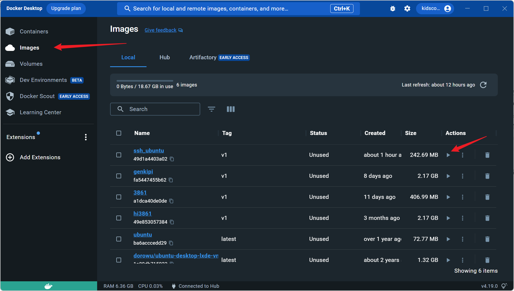</p><p data-lake-id="ub8442168" id="ub8442168">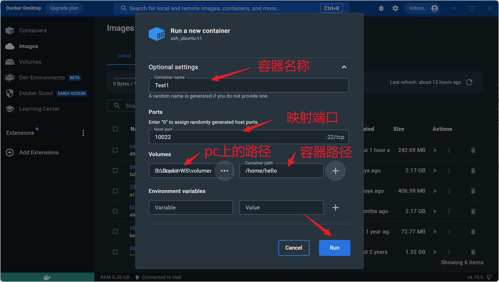</p><ul list="u87d1d322"><li data-lake-id="u86c5fee3" fid="uae1aa153" id="u86c5fee3"><span data-lake-id="u76b29739" id="u76b29739">容器名称：自定义的容器名称</span></li><li data-lake-id="u9c677214" fid="uae1aa153" id="u9c677214"><span data-lake-id="ua38ff12f" id="ua38ff12f">映射端口部分：后面有个</span><code data-lake-id="u1b2505a1" id="u1b2505a1"><span data-lake-id="u0af94dff" id="u0af94dff">22/tcp</span></code><span data-lake-id="u51ea7661" id="u51ea7661">为固定部分，这个来源是我们在构建镜像的Dockerfile中配置了</span><code data-lake-id="u057f02d2" id="u057f02d2"><span data-lake-id="ua0231f34" id="ua0231f34">EXPOSE</span></code><span data-lake-id="u07000103" id="u07000103">端口这个属性，值配置的为22。前面部分为我们填入的端口，这个根据实际情况填写值，这个表示的是我本地的PC电脑的端口映射到这个容器的22端口上</span></li><li data-lake-id="uf648b578" fid="uae1aa153" id="uf648b578"><span data-lake-id="u660adc3d" id="u660adc3d">在</span><code data-lake-id="u55e78d43" id="u55e78d43"><span data-lake-id="u68d3322c" id="u68d3322c">Volumes</span></code><span data-lake-id="u26dbaf31" id="u26dbaf31">中，有两个输入框，前一个表示pc本地的路径，第二个表示容器中的路径，这个路径值在Dockerfile中配置过，为</span><code data-lake-id="u038b36a4" id="u038b36a4"><span data-lake-id="uf1cfa1b9" id="uf1cfa1b9">VOLUME ["/home/hello"]</span></code><span data-lake-id="u02d720fe" id="u02d720fe">,意思是本地文件和这个容器文件联通。</span></li></ul><p data-lake-id="u42ce607e" id="u42ce607e">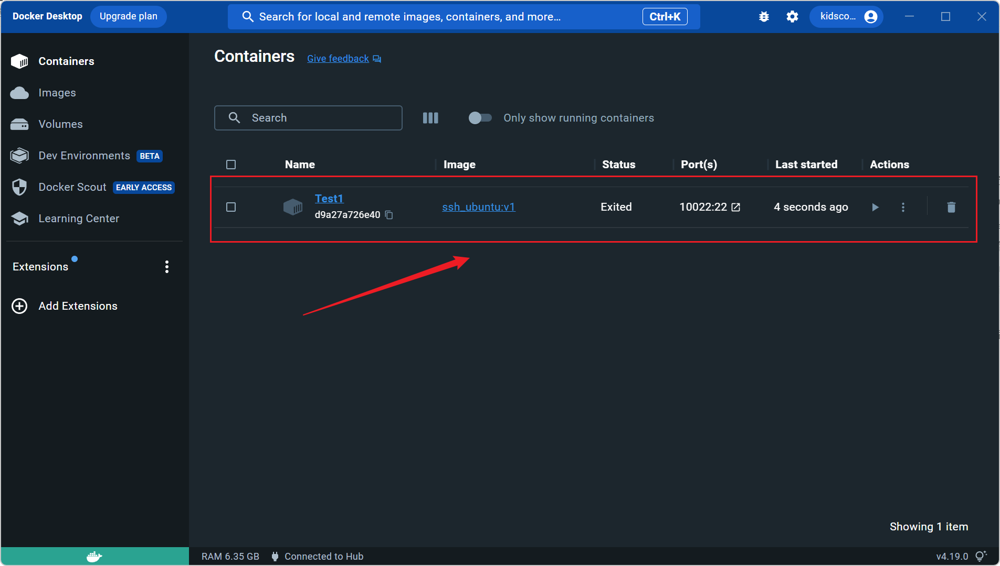</p><h4 data-lake-id="gRnuy" id="gRnuy"><span data-lake-id="ufdbf841b" id="ufdbf841b">查看启动日志</span></h4><p data-lake-id="u54096323" id="u54096323"><span data-lake-id="u632e78b2" id="u632e78b2">通过三个点进入</span><code data-lake-id="u1c180a85" id="u1c180a85"><span data-lake-id="u68e9b9d3" id="u68e9b9d3">view details</span></code></p><p data-lake-id="ucb817904" id="ucb817904">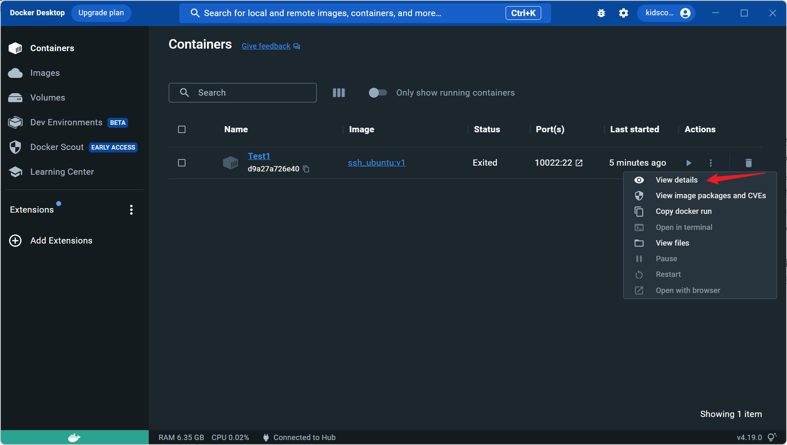</p><p data-lake-id="u90ce38d6" id="u90ce38d6"><span data-lake-id="ua12ad97b" id="ua12ad97b">在Log中我们会看到hello world打印的字样</span></p><p data-lake-id="ue4773993" id="ue4773993">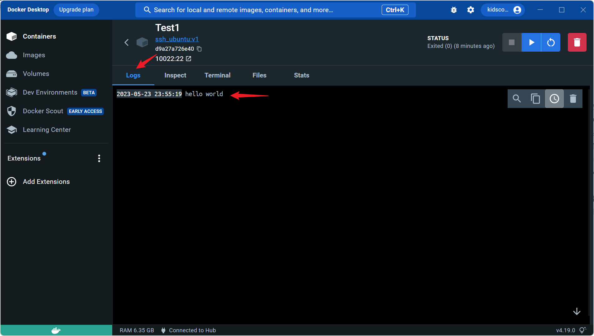</p><p data-lake-id="uea221715" id="uea221715"><span data-lake-id="u48bb64a1" id="u48bb64a1">因为在构建过程中，Dockfile中我们填入了</span><code data-lake-id="u6304a0c0" id="u6304a0c0"><span data-lake-id="ud2797a46" id="ud2797a46">CMD echo "hello world"</span></code></p><h4 data-lake-id="rfW8D" id="rfW8D"><span data-lake-id="u0bd7ffff" id="u0bd7ffff">查看文件系统</span></h4><p data-lake-id="u3a3e21bf" id="u3a3e21bf">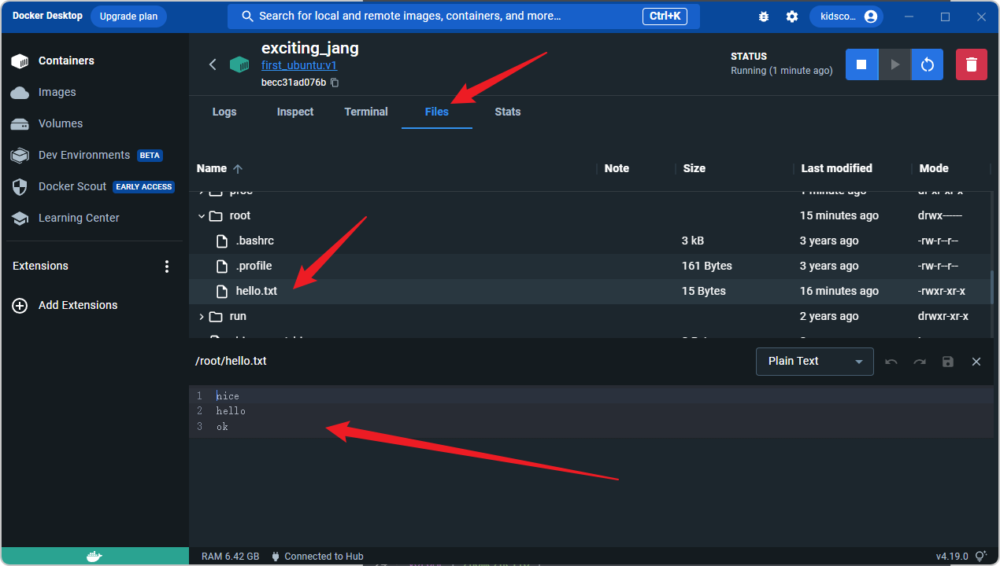</p><p data-lake-id="u79346a9a" id="u79346a9a"><code data-lake-id="u98340b24" id="u98340b24"><span data-lake-id="ube7915d9" id="ube7915d9">/root/hello.txt</span></code><span data-lake-id="u0e8acd7f" id="u0e8acd7f">为Dockerfile中，配置的</span><code data-lake-id="u3af2941b" id="u3af2941b"><span data-lake-id="u881d8ec9" id="u881d8ec9">COPY</span></code><span data-lake-id="u7ec4e325" id="u7ec4e325">将本地文件拷贝进入的</span></p><p data-lake-id="u7bd724be" id="u7bd724be"><span data-lake-id="u986adbde" id="u986adbde">​</span><br/></p><h3 data-lake-id="M8XMD" id="M8XMD"><span data-lake-id="uae7a9743" id="uae7a9743">桌面镜像</span></h3><span class="yuque-card-unsupported">[codeblock]</span><h3 data-lake-id="tl4jt" id="tl4jt"><br/></h3><h2 data-lake-id="g7Mtd" id="g7Mtd"><span data-lake-id="u6e9ea03f" id="u6e9ea03f">练习题</span></h2><ul list="u601fa6c3"><li data-lake-id="u679e6dd8" fid="u2cdded9e" id="u679e6dd8"><span data-lake-id="ue6aa8a61" id="ue6aa8a61">拉取远程镜像ubuntu</span></li><li data-lake-id="u5cafbd2c" fid="u2cdded9e" id="u5cafbd2c"><span data-lake-id="u4b633d7c" id="u4b633d7c">通过命令运行镜像ubuntu进入交互模式</span></li><li data-lake-id="ub9391b2a" fid="u2cdded9e" id="ub9391b2a"><span data-lake-id="u439fc5c5" id="u439fc5c5">通过命令导出镜像</span></li><li data-lake-id="u664d1c57" fid="u2cdded9e" id="u664d1c57"><span data-lake-id="u3ac7a90d" id="u3ac7a90d">通过命令导入镜像</span></li></ul><p data-lake-id="ud198cb42" id="ud198cb42"><span data-lake-id="u0b6cd7af" id="u0b6cd7af">​</span><br/></p>